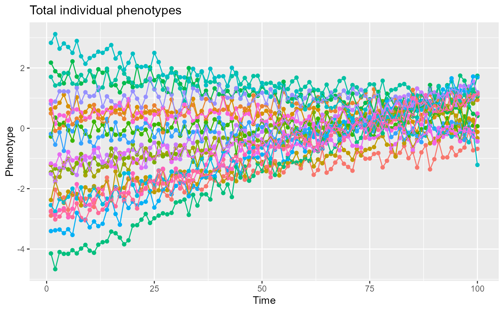

squidR.RdThe function simulates a world inhabited by individuals whose phenotypes are generated by a user-defined phenotypic equation and then samples from this world according to a user-defined sampling design. If this is your first experience with SQuID, we highly recommend to start with the interactive SQuID application with graphical interface in order to learn and get more familiarized with the SQuID model and its sampling design (use the function squidApp).
squidR(input=list(), plot=FALSE, data=NULL, module=NULL, X_previsualization=NULL)
| input | A |
|---|---|
| plot |
|
| data | A |
| module | A |
| X_previsualization | A |
squidR returns a list that includes a data.frame of the full data generated (the "world"), a data.frame of the sampled data and six ggplot2 plots of the results (only if plot is set to TRUE).
The full and the sampled data could be accessed respectively by output$full_data and output$sampled_data.
A description of the columns of the full and the sampled data.frame is provided below:
Replicate: (factor) the replicated population identifier.
Individual: (factor) the individual identifier.
Group: (factor) the high-level grouping identifier.
Individual_Trait: (factor) the identifier of each individual/trait combination.
Trait: (factor) the trait identifier.
Time: (integer) the time step value.
Phenotype: (numeric) the individual phenotype.
Beta0: (numeric) the population phenotypic mean.
Beta1: (numeric) the population mean response to environmental influences x1.
Beta2: (numeric) the population mean response to environmental influences x2.
Beta12: (numeric) the population mean response to environmental influences x1x2 (the interaction between the environmental effect x1 and the environmental effect x2).
I: (numeric) the individual-specific deviations (random-intercepts) from the population phenotypic mean Beta0.
S1: (numeric) the individual-specific response to the environmental influence x1 (random-slope).
S2: (numeric) the individual-specific response to the environmental influence x2 (random-slope).
S12: (numeric) the individual-specific response to the environmental influence x1x2 (the interaction between the environmental effect x1 and the environmental effect x2; random-slope).
X1: (numeric) the environmental gradient x1.
X2: (numeric) the environmental gradient x2.
X1X2: (numeric) the environmental gradient x1x2 (the interaction between the environmental effect x1 and the environmental effect x2).
G: (numeric) the higher-level grouping value.
e: (numeric) the measurement error.
squidR returns a list that also includes a list (plots) of six ggplot2 plots of the results. Note that the plots display only the data of the first trait, the first replicate and the first 20 individuals of the simulation.
$plots$X1: a plot of the environmental gradient x1.
$plots$X2: a plot of the environmental gradient x2.
$plots$X1X2: a plot of the environmental gradient x1x2 (the interaction between the environmental effect x1 and the environmental effect x2).
$plots$totPhen: a plot of the raw individual phenotype over time.
$plots$sampPhen: a plot of the sampled individual phenotype over time.
$plots$sampTime: a plot of the sampling time of each individual.
A detailed description of the SQuID model and its sampling design is provided on the SQuID app (run SQuID app with squidApp). Reading the SQuID documentation on the SQuID app is prerequisite to use properly the SQuID R function.
The argument input is a list that contains the different input parameters to the SQuID model. All the parameters are listed below including their default value and a short description. If a parameter is not declared within the input list, the default value will be used.
Tmax (default 1): positive integer; the duration of the simulation (number of time steps).
NP (default 1): positive integer; the number of replicated populations. The replicated populations are generated independently using the same simulation design that has been initially inputted by the user. Note that data from different populations will be saved in the same output file that you could later use to run statistical analyses.
NI (default 1): positive integer; the number of individuals in each sampled population. NI must be divisible by the number of higher-level groups (NG).
NT (default 1): positive integer; the number of traits for each individual. SQuID allows a maximum of 2 traits.
NG (default 1): positive integer; the number of higher-level groups. NG must be lower than the number of individuals NI.
X1_state (default FALSE): logical; if TRUE, an environmental effect x1 will be added to the model equation.
X1_sto_state (default FALSE): logical; if TRUE, a stochastic environmental effect will be added to the environmental effect x1. The stochastic environmental effect values follow a normal distribution with a mean of 0 and a variance of X1_sto_V.
X1_sto_shared (default TRUE): logical; if TRUE, the stochastic environmental effect included in the environmental effect x1 will be shared between individuals. If FALSE, each individual will experience a different stochastic environmental effect x1 (i.e. a new stochastic environmental effect is generated for each individual).
X1_sto_V (default 1): numeric; the variance used to generate the normally distributed stochastic environmental effect x1.
X1_sto_autocor_state (default FALSE): logical; if TRUE, an autocorrelation effect will be added to the stochastic environmental effect x1.
X1_sto_corr (default 0): numeric; the correlation value ranging from 0 to 1 that characterizes the magnitude of the temporal autocorrelation between two consecutive time steps.
X1_lin_state (default FALSE): logical; if TRUE, a linear trend will be added to the environmental effect x1.
X1_lin_shared (default TRUE): logical; if TRUE, the linear trend included in the environmental effect x1 will be shared between individuals. If FALSE, each individual will experience a different linear trend within the environmental effect x1. A different linear trend is generated for each individual by varying the intercept and the slope of the linear equation. The variation in intercepts and slopes following a normal distribution with means X1_lin_intercept, X1_lin_slope and variance X1_lin_V.
X1_lin_intercept (default 0): numeric; the intercept of the linear trend included into the environmental effect x1.
X1_lin_slope (default 1): numeric; the slope of the linear trend included into the environmental effect x1.
X1_lin_V (default 1): numeric; the variance used to generate different (unshared) linear trend effect for each individual within the environmental effect x1.
X1_cyc_state (default FALSE): logical; if TRUE, a cyclic trend will be added the environmental effect x1.
X1_cyc_shared (default TRUE): logical; if TRUE, the cyclic trend for environmental effect x1 will be shared between individuals. If FALSE, each individual will experience a different cyclic trend for environmental effect x1. A new cyclic trend is generated for each individual by varying the amplitude, the period, the horizontal shift and the vertical shift of the cyclic equation following a normal distribution where the mean is the parameter value itself and the variance is X1_cyc_V.
X1_cyc_amplitude (default 10): positive numeric; the amplitude of the cyclic trend for environmental effect x1.
X1_cyc_period (default 10): positive numeric; the period of the cyclic trend for the environmental effect x1.
X1_cyc_Hshift (default 0): positive numeric; the horizontal shift of the cyclic trend for environmental effect x1.
X1_cyc_Vshift (default 0): positive numeric; the vertical shift of the cyclic trend for environmental effect x1.
X1_cyc_V (default 0): numeric; the variance used to generate different (unshared) cyclic trends for each individual in the environmental effect x1.
X2_state (default FALSE): logical; if TRUE, an environmental effect x2 will be added to the model equation.
X2_sto_state (default FALSE): logical; if TRUE, a stochastic environmental effect will be added to the environmental effect x2. The stochastic environmental effect values follow a normal distribution with mean of 0 and a variance of X2_sto_V.
X2_sto_shared (default TRUE): logical; if TRUE, the stochastic environmental effect included in the environmental effect x2 will be shared between individuals. If FALSE, each individual will experience a different stochastic environmental effect x2 (i.e. a new stochastic environmental effect is generated for each individual).
X2_sto_V (default 1): numeric; the variance for the normally distributed stochastic environmental effect x2.
X2_sto_autocor_state (default FALSE): logical; if TRUE, an autocorrelation effect will be added to the stochastic environmental effect x2.
X2_sto_corr (default 0): numeric; the correlation value ranging from 0 to 1 that characterizes the magnitude of the temporal autocorrelation between two consecutive time steps.
X2_lin_state (default FALSE): logical; if TRUE, a linear trend will be added to the environmental effect x2.
X2_lin_shared (default TRUE): logical; if TRUE, the linear trend included in the environmental effect x2 will be shared between individuals. If FALSE, each individual will experience a different linear trend within the environmental effect x2. A new linear trend is generated for each individual by varying the intercept and the slope of the linear equation. The variation in intercepts and slopes follow a normal distribution with means X2_lin_intercept, X2_lin_slope and variance X2_lin_V.
X2_lin_intercept (default 0): numeric; the intercept of the linear trend for environmental effect x2.
X2_lin_slope (default 1): numeric; the slope of the linear trend for environmental effect x2.
X2_lin_V (default 1): numeric; the variance used to generate different (unshared) linear trend effect for each individual's environmental effect x2.
X2_cyc_state (default FALSE): logical; if TRUE, a cyclic trend will be added the environmental effect x2.
X2_cyc_shared (default TRUE): logical; if TRUE, the cyclic trend included in the environmental effect x2 will be shared between individuals. If FALSE, each individual will experience a different cyclic trend for the environmental effect x2. A new cyclic trend is generated for each individual by varying the amplitude, the period, the horizontal shift and the vertical shift of the cyclic equation following a normal distribution where the mean is the parameter value itself and the variance is X2_cyc_V.
X2_cyc_amplitude (default 10): positive numeric; the amplitude of the cyclic trend included into the environmental effect x2.
X2_cyc_period (default 10): positive numeric; the period of the cyclic trend for environmental effect x2.
X2_cyc_Hshift (default 0): positive numeric; the horizontal shift of the cyclic trend for environmental effect x2.
X2_cyc_Vshift (default 0): positive numeric; the vertical shift of the cyclic trend for environmental effect x2.
X2_cyc_V (default 0): numeric; the variance used to generate different (unshared) cyclic trend effect for each individual within the environmental effect x2.
X_Interaction (default FALSE): logical; if TRUE, the environmental effect x1*x2 representing the interaction between the environmental effect x1 and the environmental effect x2 will be added to the model equation.
B (default c(0,0,0,0)): numeric vector; the population mean values. When the number of trait is set to 1, the length of the vector is 4. The vector elements are respectively the population intercept (b0), the population response to environmental influences x1 (fixed slope; b1), the population response to environmental influences x2 (fixed slope; b2) and the population response interaction between environmental influences x1 and x2 (fixed slope; b12). If the number of trait is set to 2, the length of the vector is doubled (len=8) and the second half corresponds to the population mean values associated with the second trait.
Vind (default matrix(0, nrow=4, ncol=4)): square, positive definite matrix or lower triangular matrix; the individual variance/correlation matrix. Variances are positive numeric numbers and correlations are numeric numbers ranged between -1 and 1. Variances are along the matrix diagonal and correlation values below the matrix diagonal. When the number of trait is set to 1, the dimension of the matrix is 4 rows by 4 columns (4x4) and the diagonal elements are respectively the individual-specific (random) intercept variance (VI), the individual-specific response to an environmental effect x1 (random slope) variance (VS1), the individual-specific response to an environmental effect x2 (random slope) variance (VS2) and the individual-specific response interaction to two environmental effects x1 and x2 (random slopes) variance (VS12). When the number of trait is set to 2, the dimension of the matrix is doubled (8x8) where the second half of the diagonal is the individual variances (intercept and slopes) of the second trait. Note that it is possible to set correlation relationships between random effects within and/or among traits.
Ve (default 0): positive numeric; the measurement error variance.
VG (default 0): positive numeric; the high-level grouping variance.
NR (default 1): positive integer; the average number of records sampled per individual.
Vhsi (default 0): numeric (between 0 and 0.95); the among-individual variance in timing of sampling.
NR_ind (default TRUE): logical; if TRUE, individuals will be sampled the same number of times.
NR_trait (default TRUE): logical; if TRUE, traits within individuals will be sampled the same number of times.
ST_ind (default TRUE): logical; if TRUE, individuals will be sampled at the same time (i.e. recorded simultaneously).
ST_trait (default TRUE): logical; if TRUE, traits within individuals will be sampled at the same times (i.e. recorded simultaneously).
When the full data of a previous squid simulation is passed to squidR through the argument data, squidR does not generate a new world and samples directly into the already existing world.
Allegue, H., Araya-Ajoy, Y.G., Dingemanse, N.J., Dochtermann N.A., Garamszegi, L.Z., Nakagawa, S., Reale, D., Schielzeth, H. and Westneat, D.F. (2016) SQuID - Statistical Quantification of Individual Differences: an educational and statistical tool for understanding multi-level phenotypic data in linear mixed models. Methods in Ecology and Evolution, 8:257-267.
Dingemanse, N.J. and Dochtermann N.A. (2013) Quantifying individual variation in behaviour: mixed-effect modelling approaches. Journal of Animal Ecology, 82:39-54.
squidApp to run the SQuID app which includes detailed documentation on the SQuID model and its sampling design.
If this is your first experience with SQuID, we highly recommend to start with the interactive SQuID application with graphical interface in order to learn and get more familiarized with the SQuID model (phenotypic equation) and its sampling design (use the function squidApp).
## create the input list ## input <- list() ## define the model input parameters ## input$Tmax <- 100 # 100 time steps input$NP <- 10 # 10 replicated populations input$NI <- 20 # 20 individuals per replicate population input$NT <- 1 # 1 trait per individual # in this simulation model, only one environmental gradient (x1) is added # turn on the environmental gradient x1 input$X1_state <- TRUE # add a stochastic environmental effect to the environmental effect x1 input$X1_sto_state <- TRUE # the stochastic environmental effect included # into the environmental effect x1 is not shared among individual. # Each individual will experience a different stochastic environmental effect. input$X1_sto_shared <- FALSE # add an autocorrelation effect to the stochastic # environmental effect within the environmental effect x1. input$X1_sto_autocor_state <- FALSE # define the autocorrelation value between two consecutive time steps. input$X1_sto_corr <- 0.5 # add a linear trend to the environmental effect x1. # the default parameters for the linear trend will be used # (an intercept of 0, a slope of 1 and the linear trend will be shared among individuals) input$X1_lin_state <- TRUE # define the population mean values vector. # the population mean (fixed intercept) and # the population mean response to environmental influences x1 (fixed slope) # are set to 0.1. input$B <- c(0.1, 0.1, 0, 0) # define the individual variance/correlation matrix (squared matrix; 4x4) # the individual-specific deviation (random intercept; VI) variance is set to 0.7. # the individual-specific response to an environmental effect x1 (random slope; VS1) is set to 0.5. # the correlation between the individual-specific deviation (I) # and the individual-specific response # to an environmental effect x1 # (S1) is set to -0.7. input$Vind <- matrix(c(0.7 , 0 , 0 , 0, -0.7 , 0.5 , 0 , 0, 0 , 0 , 0 , 0, 0 , 0 , 0 , 0), nrow=4, byrow=TRUE) input$Ve <- 0.05 # the measurement error variance ## define the sampling design ## # the mean number of records per individual input$NR <- 10 # the among-individual variance in timing of sampling input$Vhsi <- 0.2 # individuals are not sampled the same number of times. input$NR_ind <- FALSE # individuals are not sampled at the time input$ST_ind <- FALSE ## run the simulation ## output <- squidR(input, plot=TRUE) # plot the individual phenotype values over time print(output$plot$totPhen)#> Replicate Individual Group Individual_Trait Trait Time Phenotype B0 B1 B2 #> 1 1 1 1 1 1 1 -2.680891 0.1 0.1 0 #> 2 1 1 1 1 1 2 -2.400395 0.1 0.1 0 #> 3 1 1 1 1 1 3 -2.641104 0.1 0.1 0 #> 4 1 1 1 1 1 4 -2.552204 0.1 0.1 0 #> 5 1 1 1 1 1 5 -2.376512 0.1 0.1 0 #> 6 1 1 1 1 1 6 -2.563661 0.1 0.1 0 #> B12 I S1 S2 S12 X1 X2 X1X2 G e #> 1 0 -1.225056 0.7365136 0 0 -1.657984 0 0 0 -0.16890934 #> 2 0 -1.225056 0.7365136 0 0 -1.690931 0 0 0 0.13914785 #> 3 0 -1.225056 0.7365136 0 0 -1.659905 0 0 0 -0.12751497 #> 4 0 -1.225056 0.7365136 0 0 -1.577768 0 0 0 -0.10732380 #> 5 0 -1.225056 0.7365136 0 0 -1.561005 0 0 0 0.05434633 #> 6 0 -1.225056 0.7365136 0 0 -1.566681 0 0 0 -0.12805517## run a second simulation with the identical world but with a different sampling design ## where individuals are sampled the same number of times and at the same time input$NR_ind <- TRUE # individuals are sampled the same number of times. input$ST_ind <- TRUE # individuals are sampled at the time output2 <- squidR(input, plot=TRUE, data=output$full_data)